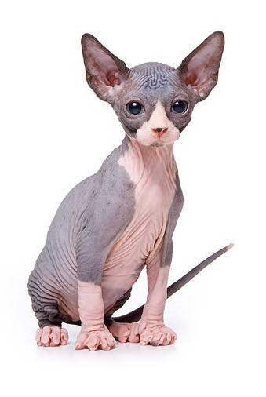

— одна из самых узнаваемых пород кошек. Ее отличительная особенность — отсутствие шерсти. Хотя сфинксов еще называют «лысыми», на самом деле существует несколько разновидностей, среди которых есть бесшерстные кошки, а также представители с шерстью «замшевой» текстуры. Иногда встречаются сфинксы с более длинной, но редкой шерстью бархатистой или более жесткой структуры. У некоторых представителей породы бывают редкие усы и брови. Это очень грациозные и подтянутые кошки, с развитой мускулатурой, большими ушами и заостренной книзу мордочкой.
Характер:
Сфинксы — умные и ласковые. Они в меру любопытны, игривы и очень общительны. Особую привязанность проявляют к хозяину: будьте готовы, что они довольно шумные и любят «поговорить». Сфинксы не стесняются выражать потребности: если ей захочется внимания, будет следовать за хозяином по пятам, требуя ласки.